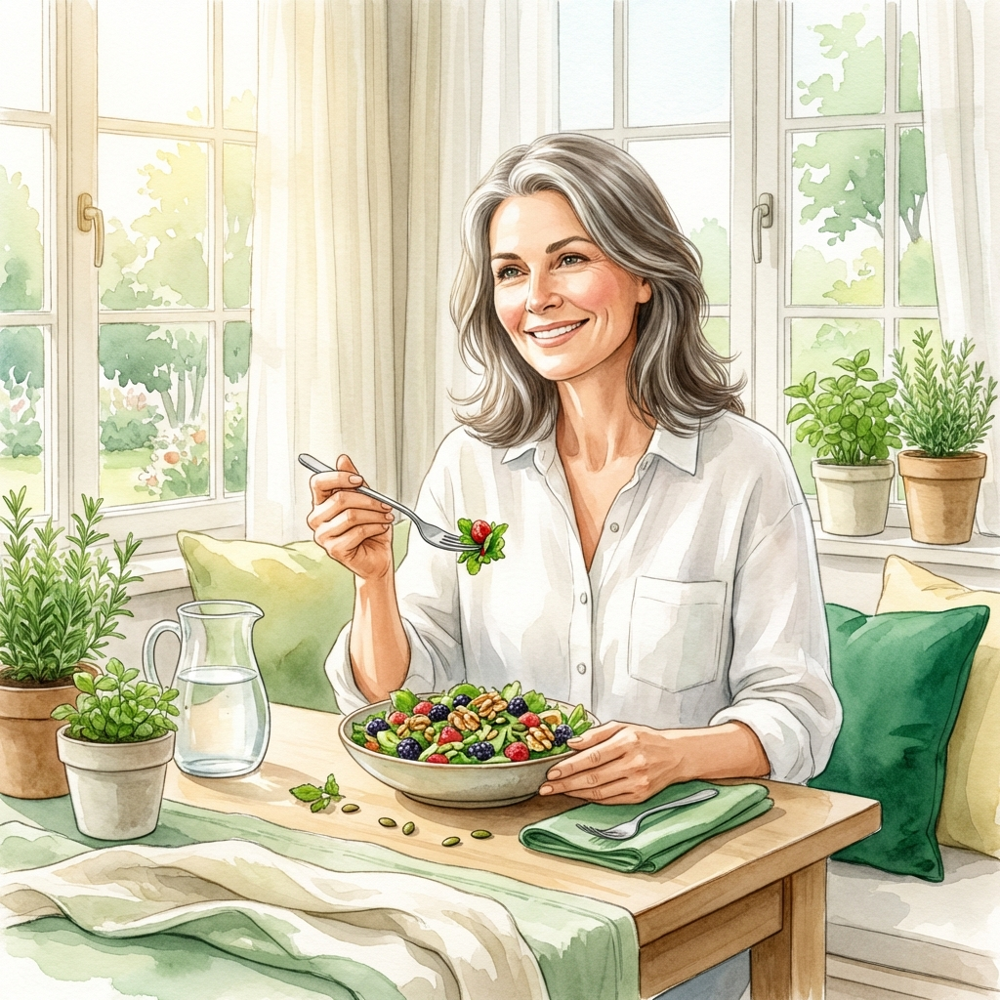

Neurología
Alimentos Prohibidos en Parkinson
Descubre qué alimentos evitar y cómo optimizar tu medicación a través de la dieta.
Leer más →Contenido basado en evidencia científica para ayudarte a gestionar tu salud con autonomía y seguridad.

Descubre qué alimentos evitar y cómo optimizar tu medicación a través de la dieta.
Leer más →
Los 10 alimentos maestros para reducir el LDL y proteger tu corazón de forma natural.
Leer más →Cómo fortalecer tu segundo cerebro y sistema inmune con prebióticos y probióticos.
Leer más →Mantén tu fuerza y masa muscular con los años a través de nutrición proteica clave.
Leer más →Guía de texturas y consistencias para pacientes con dificultad al tragar.
Leer más →
Aprende a controlar tus picos de glucosa sin sacrificar el sabor en tus comidas.
Leer más →Cambios dietéticos rápidos y efectivos para normalizar tus niveles de grasa en sangre.
Leer más →